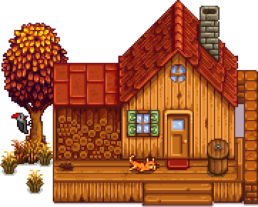

Poczatki z gra
Poczatki z gra Gracz
Gracz Farma
Farma zwierzeta
zwierzeta Zarobki
Zarobki Skile
Skile Pakiet zadan
Pakiet zadan Mineraly
Mineraly Artefakty
Artefakty Pierscionki
Pierscionki Pustynna kopalnia
Pustynna kopalnia
Stardew Valley to gra RPG z otwartym zyciem na wsi! Odziedziczyles stara dzialke od swojego dziadka w miescie Stardew Valley. Uzbrojony w recznie robione narzedzia i kilka monet, wyruszasz, by rozpoczac nowe zycie. Czy mozesz nauczyc sie zyc z ziemi i zamienic te zarosniete pola w dorodną farmę i kwitnacy dom? To nie bedzie latwe. Odkad Joja Corporation przybyla do miasta, stare sposoby zycia prawie zniknely. Dom kultury, niegdys najbardziej tetniace zyciem centrum aktywnosci w miescie, teraz lezy w ruinie. Ale dolina wydaje sie pelna mozliwosci. Przy odrobinie poswiecenia mozesz po prostu przywrocic Stardew Valley z dawnych lat do swietnosci!